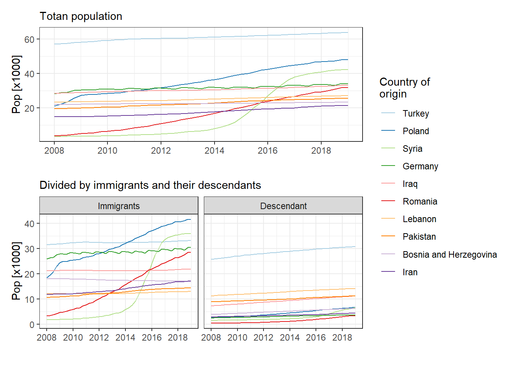

Chapter 1 Population growth
Migration and housing prices are closely related with profound implications on urban planning. In this sense, there is a two-way causal relationship between migration and house prices (e.g. Lin et al. (2018), Jeanty, Partridge, and Irwin (2010)). On the one hand, a rise on house prices will increase household’s housing equity and, therefore, homeowners would have a higher financial flexibility for purchasing a new house. On the other hand, high housing prices can make the house unaffordable. Prices differences between the region where migrants live and regions where they intend to move may also affect in- and out- migration rates. Finally, the expectation of future house prices also plays an important role in the decision to move (Peng and Tsai (2019)). Furthermore, migration increases the housing demand and, as a consequence, the prices (Wang, Hui, and Sun (2017)). An example of this effect has been found in Sweden where “a 1% increase in the foreign-born population results in a 0.8% increase in house prices, which increases to 1.2% if internal migration is also accounted for” (Tyrcha and Abreu (2019)).
We analyse therefore housing prices, population and migration patterns in Denmark, evaluating the influence of housing prices on migration (and vice versa). Specific questions we will respond are, among others:
How have housing prices changed over time in Denmark?
How does it affect mobility and the population of a region?
What is the effect of immigration on housing prices?
What is the percentage of immigrants that own/rent a property?
Is there racial segregation of immigrants? How does it affect mobility?
Do the developments of housing prices in areas with significantly higher (or lower) representation of immigrants differ from the developments in nearby areas? If there is an effect, does it differ depending on the immigrants’ country of origin?
Danish population has growth over the last decade from 5.47 million (2008-Q1) to 5.82 million (2020-Q3). However, this increase is mainly due to foreign population. In this sense, the foreigners have raised from 0.30 million to 0.53 million (80%) while Danish citizens has growth from 5.18 million to 5.29 million (2.5%). Therefore, from the increase of almost 350,000 inhabitants over the last decade approximately 66% are immigrants. The population is also getting older with an increase of both the mean and median age of the population. However, there is a significant difference between the mean and median ages of Danish and Foreign citizens, with these values around 40-42 years and 32-34 years respectively. Furthermore, these values have raised for the Danish population but not for foreigners. Another consideration is that the mean age for Danish citizens is less than the median, which indicates that the distribution is skewed to the left (i.e. more elderly people), However, for the foreign population it is the other way around (i.e. the majority are young people).
# Load population data by citizenship and age (208Q1 - 2019Q1)
# Metadata table of interest (e.g. KMSTA001)
var_pop <- get_table_metadata(table_id = "FOLK1D", variables_only = TRUE)
# Variables we would like to get data
var_input <- list(list(code = "OMRÅDE", values = "000"),
list(code = "KØN", values = c(1,2)),
list(code = "ALDER", values = seq(0, 125, 1)),
list(code = "STATSB", values = c("DANSK", "UDLAND")),
list(code = "tid", values = var_pop$values[[5]]$id[1:45]))
# Get data
pop_ctzn_age <- get_data("FOLK1D", variables = var_input) %>%
rename(Country = OMRÅDE,
Gender = KØN,
Age = ALDER,
Citizen = STATSB,
Year = TID,
Pop = INDHOLD) %>%
mutate(Country = "Denmark",
Citizen = case_when(Citizen == "Danish citizen" ~ "Danish",
Citizen == "Foreign citizen" ~ "Foreign"),
Date = gsub("Q", "", Year),
Date = as.integer(Date),
Date = as_date_yq(Date),
Date = first_of_quarter(Date)) %>%
separate(Year, c("Year", "Quarter"), sep = "Q") %>%
mutate(Year = as.integer(Year),
Quarter = as.integer(Quarter)) %>%
mutate(Age = parse_number(Age),
Age = as.integer(Age)) %>%
# Add rows with total pop by age
pivot_wider(names_from = "Citizen", values_from = c("Pop")) %>%
mutate(Total = Danish + Foreign) %>%
pivot_longer(cols = c(Danish, Foreign, Total),
names_to = "Citizen",
values_to = "Pop") %>%
# Add population in percentage (%)
group_by(Date) %>%
mutate(Pop_per = 100 * Pop / sum(Pop)) %>%
ungroup()
# Total population by quarter and citizenship
pop_ctzn_ttl_quarter <- pop_ctzn_age %>%
group_by(Date, Citizen) %>%
# Add summary statistics (mean and median age)
summarise(Pop_total = sum(Pop),
Age_mean = weighted.mean(Age, Pop),
Age_median = matrixStats::weightedMedian(Age, Pop)) %>%
ungroup() %>%
# Standardize it to % change with 2008-Q1 as baseline
group_by(Citizen) %>%
arrange(Date, Citizen) %>%
mutate(pct_change_2008 = (Pop_total/first(Pop_total) - 1) * 100) %>%
ungroup()
# Plot
p1 <- ggplot() +
geom_line(data = pop_ctzn_ttl_quarter,
aes(x = Date, y = Pop_total/1000, col = Citizen)) +
labs(title = "Danish population (2008 - 2020)",
subtitle = "Total population",
y = "x1000") +
theme_bw()
p2 <- ggplot() +
geom_line(data = pop_ctzn_ttl_quarter,
aes(x = Date, y = pct_change_2008, col = Citizen)) +
labs(title = "",
subtitle = "Percentage of change",
y = "%") +
theme_bw()
p3 <- ggplot() +
geom_line(data = pop_ctzn_ttl_quarter,
aes(x = Date,
y = Age_median,
colour = Citizen,
linetype = "Median")) +
geom_line(data = pop_ctzn_ttl_quarter,
aes(x = Date,
y = Age_mean,
colour = Citizen,
linetype = "Mean")) +
scale_linetype_discrete(name = "Age") +
labs(title = "",
subtitle = "Age variation",
y = "Age") +
theme_bw()
p1 + p2 + p3Figure 1.1: Danish population from 2008-2020
The population pyramid also confirms this tendency (figure 1.2). We can see an increase of the percentage of the old dependency people (i.e. > 65 years old), while the percentages of young people (<18 years) has been reduced (lower birth rate with time). Foreign citizens have also increases, with the majority in the economically active region (i.e. 25-35 years old). The bulge in this region may indicate a period of immigration and/or a baby boom years before. The number of young people in this population has also increased, in comparison to the first day of 2008 (Is it due to a high birth rate among foreigner and/or because migrants came to Denmark with their family/children?). However, we see a narrow shape at the top of the curve, which indicate that low proportion of foreigners get older in Denmark. A narrow shape usually means high death rates in the population; however, it is not plausible in Denmark and it may be more reasonable to think that migrants return to their countries after retirement.
# Load population data by ancestry and age (5 years) in DK
# Metadata table of interest (e.g. FOLK1C)
id_table <- "FOLK1C"
var_pop <- get_table_metadata(table_id = id_table, variables_only = TRUE)
# Loop by quarter for getting the data
steps <- function(quarter){
var_values <- list(id_region,
id_gender,
id_age,
id_ancestry,
id_citizen,
quarter)
var_input <- purrr::map2(.x = var_codes,
.y = var_values,
.f = ~list(code = .x, values = .y))
get_data(id_table, variables = var_input)
}
# Codes for var_input
var_codes <- c("OMRÅDE", "KØN", "ALDER", "HERKOMST", "IELAND", "Tid")
# Values for var_input
## All regions
id_region <- "000"
## Gender: Men/Women
id_gender <- c(1, 2)
## Age (remove total)
id_age <- subset(var_pop$values[[3]], id != "IALT")$id
## Ancestry
id_ancestry <- c(5, 4, 3)
## country of origin (remove total)
id_citizen <- as.numeric(var_pop$values[[5]]$id)
id_citizen <- id_citizen[id_citizen > 0]
## Quarters (e.g. 2008-Q1 and 2019-Q1)
id_quarter <- var_pop$values[[6]]$id[1:45]
# Get data (in parallel)
plan(multisession, workers = 7)
pop_DK <- id_quarter %>%
future_map_dfr(steps) %>%
filter(INDHOLD > 0) %>%
# Translate column names to English
rename(region = OMRÅDE,
gender = KØN,
age = ALDER,
ancestry = HERKOMST,
origin = IELAND,
date = TID,
pop = INDHOLD) %>%
# First day of the quarter
mutate(date = gsub("Q", "", date),
date = as_date_yq(as.integer(date)),
date = first_of_quarter(date)) %>%
mutate(region = ifelse(region == "All Denmark",
"Denmark",
NA)) %>%
# Format ancestry
mutate(ancestry = ifelse(ancestry == "Persons of Danish origin",
"Danish",
ancestry),
ancestry = factor(ancestry),
ancestry = fct_relevel(ancestry, "Immigrants", after = 1)) %>%
# Format "age"
mutate(age = ifelse(age == "100 years and over", "100OV", age),
age = gsub(" years", "", age),
age = factor(age, levels = id_age)) %>%
# Calculate population in percentage
group_by(date) %>%
mutate(pop_per = 100 * pop / sum(pop)) %>%
ungroup()
plan("default")
# Plot population pyramid
brks_y <- seq(-4, 4, 1)
lmts_y = c(min(brks_y), max(brks_y))
lbls_y <- paste0(as.character(abs(brks_y)), "%")
pop_DK %>%
filter(date == "2008-01-01" | date == "2019-01-01") %>%
ggpyramid(values = pop_per, fill = ancestry) +
scale_fill_manual(name = "Ancestry",
values = c("#0072B2", "#F0E442", "#D55E00")) +
scale_y_continuous(name = NULL,
breaks = brks_y,
labels = lbls_y,
limits = lmts_y) +
labs(caption = "Source: Statistics Denmark") +
geom_segment(data = filter(pop_DK,
date == "2008-01-01" | date == "2019-01-01"),
aes(x = 4, xend = 4,
y = -4, yend = 4),
linetype = "dashed") +
geom_segment(data = filter(pop_DK,
date == "2008-01-01" | date == "2019-01-01"),
aes(x = 13.5, xend = 13.5,
y = -4, yend = 4),
linetype = "dashed") +
ggplot2::annotate(geom = "text",
y = c(2 , 2),
x = 20.5,
label = "Women",
fontface = "bold",
size = 3) +
ggplot2:::annotate(geom = "text",
y = c(-2,-2),
x = 20.5,
label = "Men",
fontface = "bold",
size = 3) +
facet_wrap(~date) +
theme_bw() Figure 1.2: Population pyramith of Denmark
The urban areas (e.g. Copenhagn, Aalborg, Aarhus, Odese) have gained population from 2008 to 2020, while the rural regions have loss them (e.g. Lolland, Lemvig). It seems also that there are some influence from big cities, and people are moving from the rural areas into (or close to) the cities (figure 1.3). However, we do not see the same patter between the Danes and Immigrants and the number of immigrants and their descendants has increased all aver the country (figure 1.4), alleviating the population loss on rural areas.
To what degree migrants and their descendants make up for the population loss in Danes without a migrant background over time? e.g. Do the Danes leave first and the migrants fill the “gap?” The majority of immigrants however live in big cities (Figure 5). Are there differences between migrants in urban-rural areas (e.g. skilled/non-skilled migrants due to job marked)?
Are the Danish people in rural areas (red areas) older (e.g. young people are moving to the cities but elderly people stay there)? Are immigrants however young workers?
Are these areas loosing population because low birth rates/high death? Low in-migration?
# Municipalities (get from DAGI)
muni_link <- paste(loc_dir,
"DAGIREF_SHAPE_UTM32-EUREF89/ADM",
"KOMMUNE.shp",
sep = "/")
dk_muni <- read_sf(muni_link) %>%
st_zm() %>%
st_transform(crs = "EPSG:25832") %>%
select(KOMKODE, KOMNAVN) %>%
rename(muni_id = KOMKODE,
muni_name = KOMNAVN) %>%
group_by(muni_id, muni_name) %>%
summarise(geometry = sf::st_union(geometry)) %>%
ungroup()
# Big cities/urban areas
big_cities <- c("København", "Aarhus", "Odense", "Aalborg")
big_cities <- dk_muni %>% filter(muni_name %in% big_cities)# Load population data by ancestry and municipalities
# Metadata table of interest (e.g. FOLK1C)
id_table <- "FOLK1C"
var_pop <- get_table_metadata(table_id = id_table, variables_only = TRUE)
# loop by quarter for getting the data
steps <- function(quarter){
var_values <- list(id_region,
id_ancestry,
quarter)
var_input <- purrr::map2(.x = var_codes,
.y = var_values,
.f = ~list(code = .x, values = .y))
get_data(id_table, variables = var_input)
}
# Codes for var_input
var_codes <- c("OMRÅDE", "HERKOMST", "Tid")
# Values for var_input
## Region: Denmark
id_region <- as.numeric(var_pop$values[[1]]$id)
id_region <- id_region[id_region > 100]
## Ancestry
id_ancestry <- NA
## Quarters
id_quarter <- var_pop$values[[6]]$id[1:45] # Select all quarters
# Parallel process with {future}
plan(multisession)
pop_muni <- id_quarter %>% future_map_dfr(steps)
plan("default")
# Clean column names and format some data
pop_muni <- pop_muni %>%
# Translate column names into English
rename(muni_name = OMRÅDE,
ancestry = HERKOMST,
date = TID,
pop = INDHOLD) %>%
# First day of the quarter
mutate(date = gsub("Q", "", date),
date = as_date_yq(as.integer(date)),
date = first_of_quarter(date)) %>%
# Translate København (muni_name) and short Danes in ancestry
mutate(muni_name = gsub("Copenhagen", "København", muni_name),
ancestry = ifelse(ancestry == "Persons of Danish origin",
"Danish",
ancestry)) %>%
# Short municipalities by Total population in 20208-Q1
pivot_wider(c(muni_name, date),
names_from = ancestry,
values_from = pop) %>%
mutate(muni_name = factor(muni_name),
muni_name = fct_reorder2(muni_name, date, Total, .fun = first2)) %>%
pivot_longer(cols = c(Total, Danish, Immigrants, Descendant),
names_to = "ancestry",
values_to = "pop") %>%
# Merge Immigrants and Descendants
pivot_wider(names_from = ancestry, values_from = pop) %>%
mutate(Foreign = Immigrants + Descendant) %>%
select(-Immigrants, -Descendant) %>%
pivot_longer(-c(muni_name, date),
names_to = "ancestry",
values_to = "pop") %>%
# Sort ancestry
mutate(ancestry = factor(ancestry,
levels = c("Danish",
"Foreign",
"Total"),
labels = c("Danish",
"Foreign (Immigrants + Descendant)",
"Total"))) %>%
# Population growth (inhabitant and percentage) using 2008-Q1 as baseline
group_by(muni_name, ancestry) %>%
arrange(muni_name, date) %>%
mutate(pop_dif_2008 = pop - first(pop),
pop_pct_2008 = (pop/first(pop) - 1) * 100) %>%
ungroup()
# Link population and municipalities
dk_muni_pop <- dk_muni %>%
left_join(pop_muni, by = "muni_name") %>%
st_as_sf() %>%
mutate(date = as.Date(date))
# Transform Percentage of change to factor
pct_breaks <- c(floor(min(dk_muni_pop$pop_pct_2008)), -10, -5,
0,
5, 10, 20, 30, 50, 100, 200, max(dk_muni_pop$pop_pct_2008))
dk_muni_pop <- dk_muni_pop %>%
mutate(pop_pct_2008_brk = cut(dk_muni_pop$pop_pct_2008,
breaks = pct_breaks)) %>%
mutate(ancestry = factor(ancestry),
ancestry = fct_relevel(ancestry, "Total", after = 0))# Plot total population
myPallette <- c(rev(brewer.pal(3, "YlOrRd")), brewer.pal(9, "Blues"))
ggplot() +
geom_sf(data = filter(dk_muni_pop,
date == as.Date("2019-01-01"),
ancestry == "Total"),
aes(fill = pop_pct_2008_brk),
color = "grey50",
size = 0.05) +
scale_fill_manual(name = "Percentage",
values = myPallette,
drop = FALSE) +
labs(x = "",
y = "") +
theme_void() +
# ylim(54.50, 58.0) +
geom_sf_label_repel(data = big_cities,
aes(label = muni_name),
nudge_y = 100000,
nudge_x = 80000)Figure 1.3: Population growth from 2008 to 2019
# Plot by ancestry
ggplot() +
geom_sf(data = filter(dk_muni_pop,
date == as.Date("2019-01-01"),
ancestry != "Total"),
aes(fill = pop_pct_2008_brk),
color = "grey50",
size = 0.05) +
scale_fill_manual(name = "Percentage",
values = myPallette,
drop = FALSE) +
labs(x = "",
y = "") +
theme_void() +
facet_wrap( ~ ancestry, ncol = 2) Figure 1.4: Population growth from 2008 to 2019 by ancestry
Population change
pop_muni %>%
ggplot(aes(x = date,
y = pop_dif_2008/1000,
colour = ancestry)) +
geom_line( ) +
geom_hline(yintercept = 0, linetype="dashed", color = "grey", size = 0.5) +
facet_wrap(~muni_name, ncol = 6, scale = "free") +
theme_bw() +
theme(legend.position = "bottom",
axis.text = element_text(size = 10),
axis.title = element_text(size = 14),
legend.text = element_text(size = 14),
legend.title = element_text(size = 14, face = "bold"),
plot.title = element_text(size = 14, face = "bold"),
title = element_text(size = 14)) +
scale_y_continuous(name = "[x1000]") +
scale_x_date(name = "", date_breaks = "3 year", date_labels = "%y") +
scale_colour_manual(name = "Ancestry",
values = c("#0072B2", "#D55E00", "#000000"))Figure 1.5: Population change from 2008 (municipalitiess are shorted by the total population in 2019)
The total number of immigrants and their descendants living in Denmark at the first day of the four quarter of 2020 is 814.5k. From them, Copenhagen accounts for approximately 20% (164k), and then another 20% lives in Aarhus (60k), Odense (34k), Aalborg (24k), Frederiksberg (20k), and Vejle (15.7k).
# Load data ----
#' Data from Statistic Denmark: https://www.statbank.dk/10021
#' Table: FOLK1C
#' Population at the first day of the quarter by region, ancestry, and country of origin
#' Subjects of interest: population and elections (02)
#' Immigrants and their descendants (2402)
id_table <- "FOLK1C"
var_pop <- get_table_metadata(table_id = id_table, variables_only = TRUE)
# loop by quarter for getting the data
steps <- function(quarter){
var_values <- list(id_region,
id_ancestry,
id_citizen,
quarter)
var_input <- purrr::map2(.x = var_codes,
.y = var_values,
.f = ~list(code = .x, values = .y))
get_data(id_table, variables = var_input)
}
# Codes for var_input
var_codes <- c("OMRÅDE", "HERKOMST", "IELAND", "Tid")
# Values for var_input
## Region: Denmark
id_region <- NA
## Ancestry (Immigrants and Descendant)
id_ancestry <- c(4, 3)
## Country of origin (remove total)
id_citizen <- as.numeric(var_pop$values[[5]]$id)
id_citizen <- id_citizen[id_citizen > 0]
## Quarters
id_quarter <- var_pop$values[[6]]$id[1:45] # Select all quarters
# Parallel process with {future}
plan(multisession)
pop_migr <- id_quarter %>% future_map(steps)
pop_migr <- bind_rows(pop_migr)
plan("default")
# Clean column names and format some data
pop_migr <- pop_migr %>%
# Translate column names into English
rename(muni_name = OMRÅDE,
ancestry = HERKOMST,
origin = IELAND,
date = TID,
pop = INDHOLD) %>%
# Translate Copenhagen
mutate(muni_name = gsub("Copenhagen", "København", muni_name)) %>%
# First day of the quarter
mutate(date = gsub("Q", "", date),
date = as_date_yq(as.integer(date)),
date = first_of_quarter(date)) %>%
# Total Immigrants and Descendants by muni_name, date, and country of origin
pivot_wider(c(muni_name, origin, date),
names_from = ancestry,
values_from = pop) %>%
mutate(Total = Immigrants + Descendant) %>%
pivot_longer(cols = c(Immigrants, Descendant, Total),
values_to = "pop",
names_to = "ancestry")
# Top 10 origin countries in Denmark (in 2019Q1)
pop_migr_top10_2019 <- pop_migr %>%
filter(muni_name == "All Denmark",
date == as.Date("2019-01-01"),
ancestry == "Total") %>%
slice_max(pop, n = 10)
# Evolution of the top 10 countries over the years (since 2008)
pop_migr_top10 <- pop_migr %>%
filter(muni_name == "All Denmark",
origin %in% pop_migr_top10_2019$origin) %>%
# Reorder factors (shorted by Total population in 2019-q1)
pivot_wider(c(origin, date), names_from = ancestry, values_from = pop) %>%
mutate(origin = factor(origin),
origin = fct_reorder2(origin, date, Total)) %>%
# Long format
pivot_longer(cols = c(Immigrants, Descendant, Total),
names_to = "ancestry",
values_to = "pop") # Total
p1 <- pop_migr_top10 %>%
filter(ancestry == "Total") %>%
ggplot() +
geom_line(aes(x = date, y = pop/1000, colour = origin)) +
theme_bw() +
labs(title = "Immigrants and descendants in Denmark",
subtitle = "Top 10 countries of origin in 2020",
y = "Pop [x1000]",
x = "") +
scale_color_brewer(name = "Country of\norigin", palette = "Paired")
# Immigrants and Descendants
p2 <- pop_migr_top10 %>%
filter(ancestry != "Total") %>%
mutate(ancestry = factor(ancestry,
levels = c("Immigrants","Descendant"))) %>%
ggplot() +
geom_line(aes(x = date, y = pop/1000, colour = origin)) +
facet_grid(~ancestry) +
theme_bw() +
labs(subtitle = "Divided by ancestry",
y = "Pop [x1000]",
x = "") +
scale_color_brewer(name = "Country of\norigin", palette = "Paired")
p1 / p2 + plot_layout(guides = "collect")
# Plot spatial situation in 2019
pop_migr_muni_2019Q1 <- dk_muni %>%
left_join(filter(pop_migr, date == as.Date("2019-01-01"), ancestry == "Total"),
by = "muni_name") %>%
st_as_sf() # Total foreign population by muni (and percentage over the total migrants)
# Binds represent the same percentage of population (~20%)
cumsum__breaks <- c(0, 20, 40, 60, 80, 100)
pop_migr_total <- pop_migr_muni_2019Q1 %>%
group_by(muni_name) %>%
summarize(pop = sum(pop, na.rm = TRUE)) %>%
arrange(-pop) %>%
ungroup() %>%
# Municipality grouped with the same percentage of migrants (~ 20%)
mutate(pop_pct = 100 * pop/sum(pop)) %>%
mutate(pop_pct_cum = cumsum(pop_pct)) %>%
mutate(pop_pct_cum_brk = cut(pop_pct_cum, breaks = cumsum__breaks))
# Plot
pop_migr_total %>%
ggplot() +
geom_sf(aes(fill = pop_pct_cum_brk),
color = "grey",
size = 0.05) +
scale_fill_brewer(name = "Cumulative [%]",
palette = "YlGnBu",
direction = -1,
drop = FALSE) +
labs(x = "",
y = "") +
theme_void() +
# ylim(54.50, 58.0) +
geom_sf_label_repel(data = big_cities,
aes(label = muni_name),
nudge_y = 100000,
nudge_x = 80000)Figure 1.6: Spatial distribution of immigrants and their descendants (Date: 2019-01-01)
Spatial distribution:
Turkish and Iraqi citizens are clustered over the big cities (why?):
- Historical reason?
- Do these countries have a long history of immigration into Denmark, and before the big cities where the main receptors of immigrants?
- Furthermore, since these people have been for a long time in Denmark they have a similar migration pattern than Danes (i.e. they have moved to big cities)?
- Are they supporting newcomers from these countries? Do they have support groups (religion,…) in this municipalities, so newcomers prefer to stay in these cities? Links with country of origin?
Polish, Romanian, and Syrian citizens settled all over Denmark, without a clear pattern.
German citizens: in the big cities but the population is also important in the border region with Germany.
## Top 6 citizen groups (and percentage over the same country of origin)
cumsum__breaks <- c(0, 20, 40.0, 60.0, 80.0, 100)
top_migr_groups <- c("Turkey", "Poland", "Syria", "Germany", "Romania", "Iraq")
pop_migr_muni_2019Q1_top_groups <- pop_migr_muni_2019Q1 %>%
filter(origin %in% top_migr_groups) %>%
st_sf() %>%
group_by(origin) %>%
arrange(-pop) %>%
mutate(pop_pct = 100 * pop / sum(pop, na.rm = TRUE),
pop_pct_cum = cumsum(pop_pct),
pop_pct_cum_brk = cut(pop_pct_cum, breaks = cumsum__breaks)) %>%
select(muni_name, origin, pop, pop_pct, pop_pct_cum, pop_pct_cum_brk)
# facet by top countries, adding the total number of immigrants/descendants
sum_pop <- function(country) {
sum(pop_migr_muni_2019Q1_top_groups[pop_migr_muni_2019Q1_top_groups$origin == country, ]$pop,
na.rm = T)
}
levels <- top_migr_groups
labels <- c(paste("Turkish citizens\n(",
sum_pop("Turkey") ,
" inhabitants)",
sep = ""),
paste("Polish citizens\n(",
sum_pop("Poland"),
" inhabitants)",
sep = ""),
paste("Syrian citizens\n(",
sum_pop("Syria"),
" inhabitants)",
sep = ""),
paste("German citizens\n(",
sum_pop("Germany"),
" inhabitants)",
sep = ""),
paste("Romanian citizens\n(",
sum_pop("Romania"),
" inhabitants)",
sep = ""),
paste("Iraqi citizens\n(",
sum_pop("Iraq"),
" inhabitants)",
sep = "") )
pop_migr_muni_2019Q1_top_groups <- pop_migr_muni_2019Q1_top_groups %>%
mutate(origin_num = factor(origin, levels = levels, labels = labels))pop_migr_muni_2019Q1_top_groups %>%
ggplot() +
geom_sf(aes(fill = pop_pct_cum_brk), color = "grey", size = 0.05) +
scale_fill_brewer(name = "Cumulative [%]",
palette = "YlGnBu",
direction = -1) +
facet_wrap(~ origin_num, ncol = 2) +
theme_void()Figure 1.7: Top countries of origin for immigrants and their descendants (Date: 2019-01-01)
Definitions (from DST):
Immigrant: An immigrant is defined as a person born abroad whose parents are both (or one of them if there is no available information on the other parent) foreign citizens or were both born abroad. If there is no available information on either of the parents and the person was born abroad, the person is also defined as an immigrant.
Descendant: A descendant is defined as a person born in Denmark whose parents (or one of them if there is no available information on the other parent) are either immigrants or descendants with foreign citizenship. If there is no available information on either of the parents and the person in question is a foreign citizen, the person is also defined as a descendant.
Person of Danish origin: A person – regardless place of birth – where at least one parent is Danish citizen and also born in Denmark.
Country of origin: Country of origin is defined as following:
When no parents are known, the country of origin is defined from the persons own information. If the person is an immigrant, it’s assumed that the country of origin is equal to the country of birth. If the person is a descendant, it’s assumed that the country of origin is equal to the country of citizenship.
When only one parent is known, the country of origin is defined as the country of birth of the parent. If this is Denmark, the country of citizenship is used.
When both parents are known, the country of origin is defined as the country of birth of the mother respectively country of citizenship.